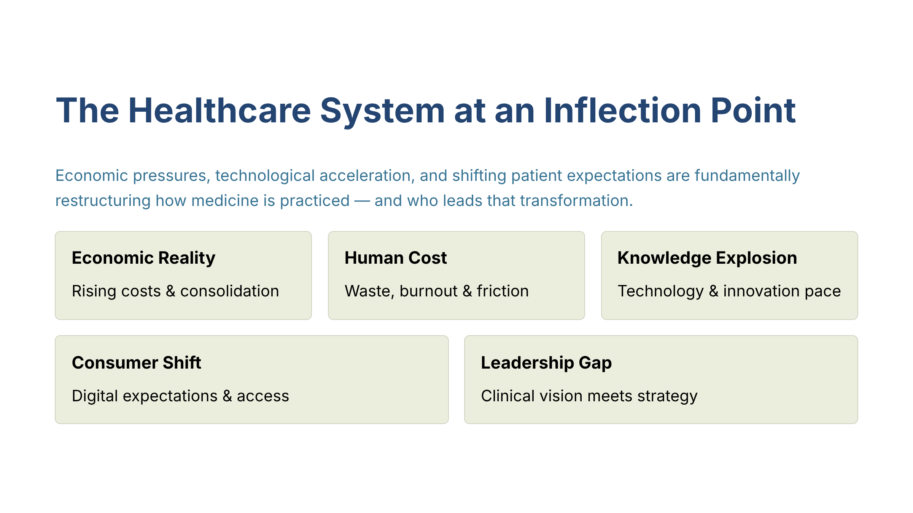
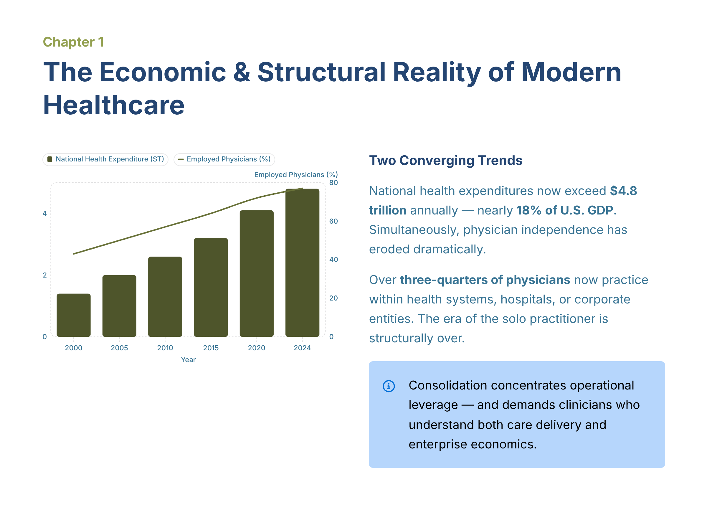
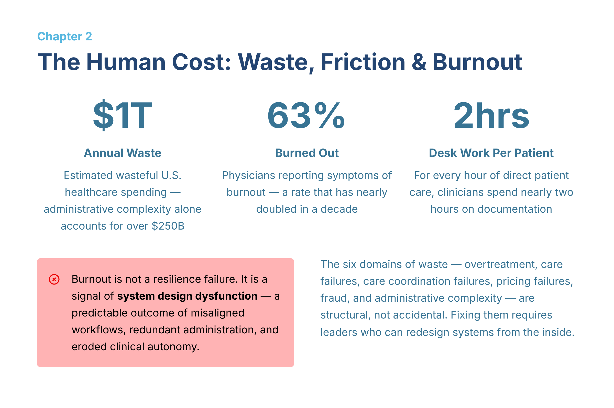
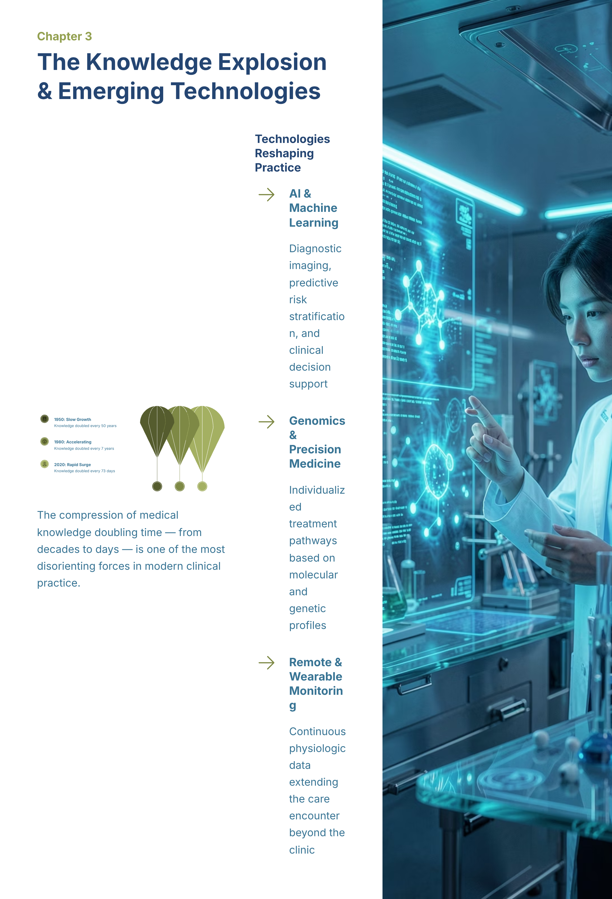
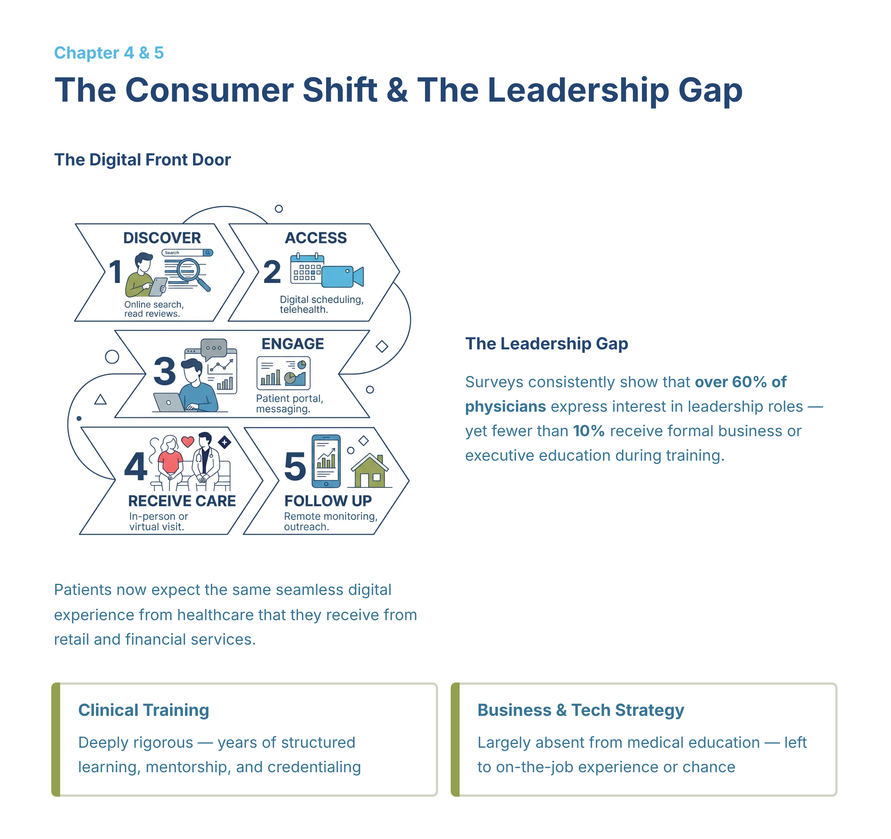
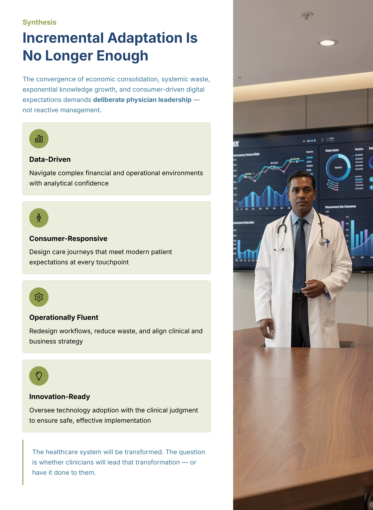

Trial e2722f2b (cycle 3) · gate G2C · generation 9kUnIq3R8936DYDIiiYtU · directive: visual-led · all contributions provenance=real · live Gamma deck
learning objective: Explain the major economic and organizational shifts shaping physician practice, including rising national health expenditures and the movement from independent practice toward employment within large health systems. · scope: in-scope · quinn-r: variant-1

learning objective: Interpret how system inefficiency and administrative burden contribute to waste and physician burnout, and identify why these pressures represent system-design problems rather than individual resilience failures. · scope: in-scope · quinn-r: variant-1

learning objective: Describe how accelerating medical knowledge growth and rapid technology adoption are changing clinical practice, and summarize why clinicians need training to oversee innovation safely and effectively. · scope: in-scope · quinn-r: variant-1

learning objective: Explain how changing patient expectations for convenience, transparency, and digital access require healthcare organizations to design more seamless care journeys. · scope: in-scope · quinn-r: variant-1

learning objective: Summarize the gap between physicians’ interest in leadership and their access to formal business or executive training, and explain why bridging clinical practice with business and technology strategy is necessary. · scope: in-scope · quinn-r: variant-1

learning objective: Integrate the lesson’s major themes to justify why deliberate physician leadership is necessary in a data-driven, consumer-responsive, operationally complex healthcare system. · scope: in-scope · quinn-r: variant-1
